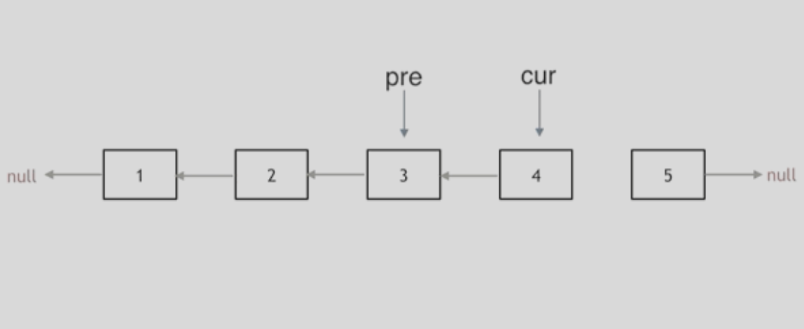
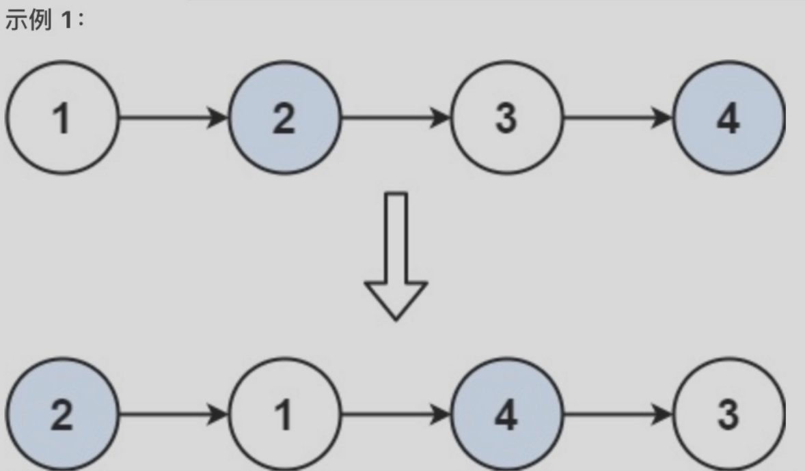
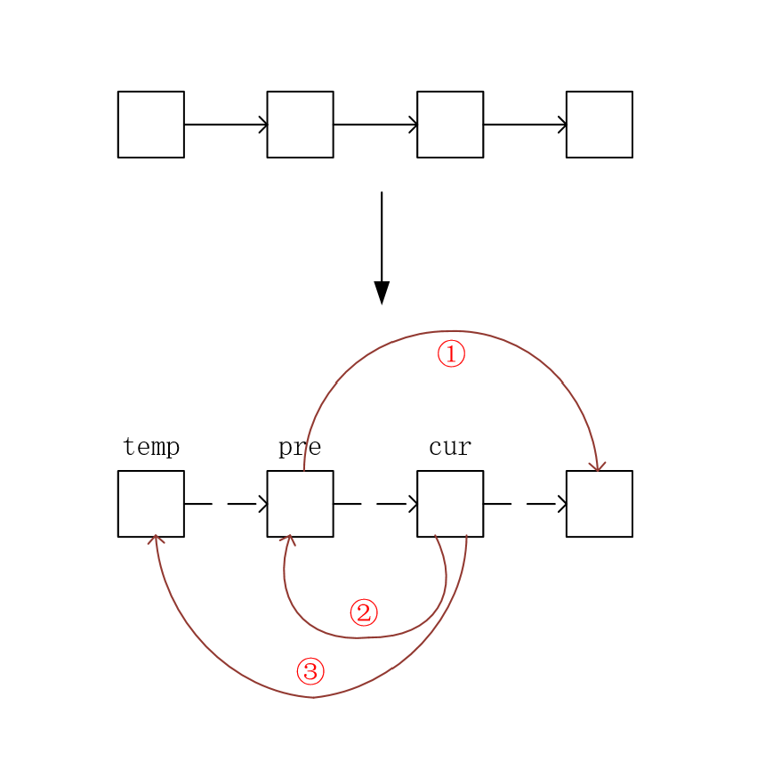
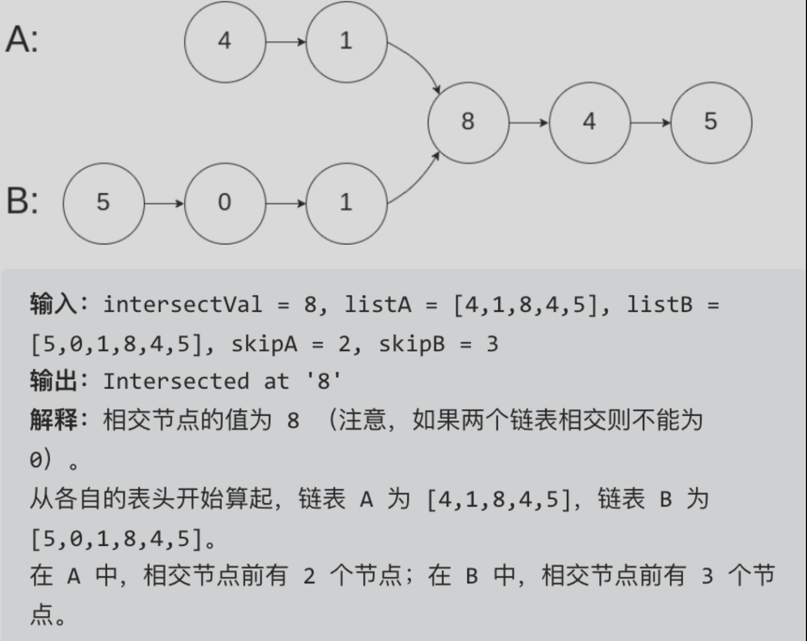
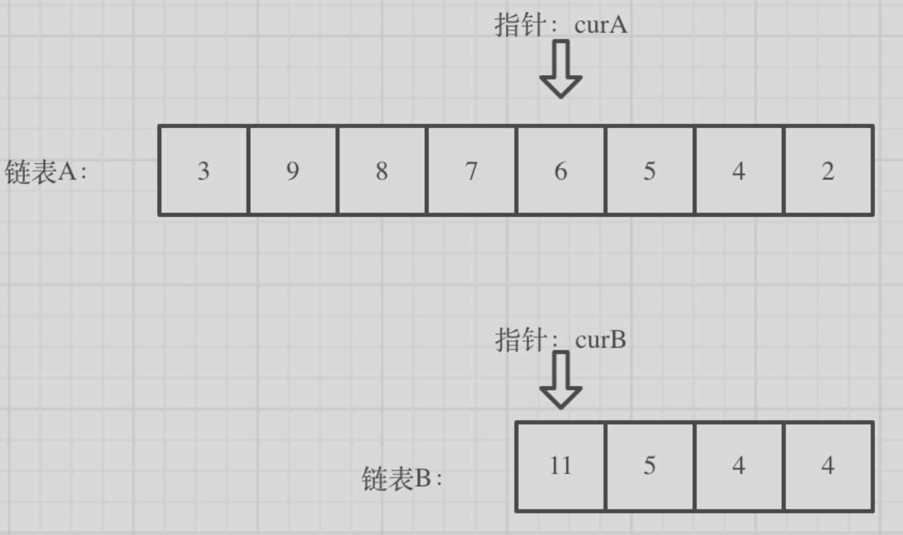
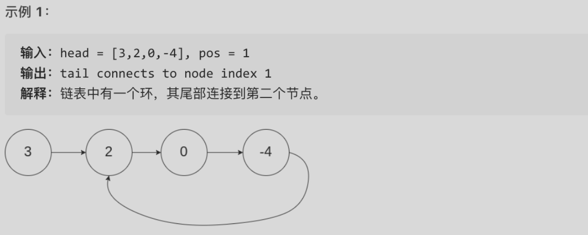

1 2 3 思想： 1）由于头节点没有前一个节点，操作存在困难，所以可以考虑哑节点 2）画图
JS中自定义链表 1 2 3 4 5 6 7 8 class ListNode { val; next = null ; constructor (value ){ this .val = value; this .next = null ; } }
问题：移除链表元素 问题描述：删除链表中等于给定值 val 的所有节点
示例：
1 2 输入：head = [1,2,6,3,4,5,6], val = 6 输出：[1,2,3,4,5]
注意点：
1 2 1. 直接使用原来的链表来进行删除操作 2. 为了操作便利，考虑到头节点的特殊，需要设置一个虚拟头节点来进行删除操作
解法：
1 2 3 4 5 6 7 8 9 10 11 12 13 var removeElements = function (head, val ){ const ret = new ListNode (0 , head); let cur = ret; while (cur.next ){ if (cur.next .val === val){ cur.next = cur.next .next ; continue ; } cur = cur.next ; } return ret.next ; }
问题：设计链表 问题描述：
1 2 3 4 5 6 在链表类中实现这些功能： - get(index)：获取链表中第 index 个节点的值。如果索引无效，则返回-1。 - addAtHead(val)：在链表的第一个元素之前添加一个值为 val 的节点。插入后，新节点将成为链表的第一个节点。 - addAtTail(val)：将值为 val 的节点追加到链表的最后一个元素。 - addAtIndex(index,val)：在链表中的第 index 个节点之前添加值为 val 的节点。如果 index 等于链表的长度，则该节点将附加到链表的末尾。如果 index 大于链表长度，则不会插入节点。如果index小于0，则在头部插入节点。 - deleteAtIndex(index)：如果索引 index 有效，则删除链表中的第 index 个节点。
解法
1 2 3 4 5 6 7 8 9 10 11 12 13 14 15 16 17 18 19 20 21 22 23 24 25 26 27 28 29 30 31 32 33 34 35 36 37 38 39 40 41 42 43 44 45 46 47 48 49 50 51 52 53 54 55 56 57 58 59 60 61 62 63 64 65 66 67 68 69 70 71 72 73 74 75 76 77 78 79 80 81 82 83 84 85 class ListNode { constructor (val, next ){ this .val = val; this .next = next; } } var MyLinkedList = function ( this ._size = 0 ; this ._tail = null ; this ._head = null ; } MyLinkedList .prototype getNode = function (index ){ if (index<0 ||index>=this ._size ) return null ; let cur = new LinkNode (0 , this ._head ); while (index-- >= 0 ) cur = cur.next ; return cur; } MyLinkedList .prototype get = function (index ){ if (index<0 ||index>=this ._size ) return null ; return this .getNode (index).val ; } MyLinkedList .prototype addAtHead = function (val ){ const node = new LinkNode (val, this ._head ); this ._head = node; this ._size ++; if (!this ._tail ) this ._tail = node; } MyLinkedList .prototype addAtTail = function (val ){ const node = new LinkNode (val, null ); this ._size ++; if (this ._tail ){ this ._tail .next = node; this ._tail = node; return ; } this ._tail = node; this ._head = node; } MyLinkedList .prototype addAtIndex = function (index, val ){ if (index>this ._size ) return ; if (index<=0 ){ this .addAtHead (val); return ; } if (index===this ._size ){ this .addAtTail (val); return ; } const node = this .getNode (index-1 ); node.next = new LinkNode (val, node.next ); this ._size ++; } MyLinkedList .prototype deleteAtIndex = function (index ){ if (index<0 ||index>=this ._size ) return ; if (index===0 ){ this ._head = this ._head .next ; if (index===this ._size -1 ) this ._tail = this ._head ; this ._size --; return ; } const node = this .getNode (index-1 ); node.next = node.next .next ; if (index===this ._size -1 ) this ._tail = node; this ._size --; } var obj = new MyLinkedList ()var param_1 = obj.get (index)obj.addAtHead (val) obj.addAtTail (val) obj.addAtIndex (index,val) obj.deleteAtIndex (index)
问题：反转链表 问题描述：
1 2 题意：反转一个单链表。 示例: 输入: 1->2->3->4->5->NULL 输出: 5->4->3->2->1->NULL

解法：
1 2 3 4 5 6 7 8 9 10 11 12 13 var reverseList = function (head ){ if (!head || !head.next ) return head; let temp = null , pre = null , cur = head; while (cur){ temp = cur.next ; cur.next = pre; pre = cur; cur = temp; } return pre; }
问题：两两交换链表中的节点 问题描述：
1 2 给定一个链表，两两交换其中相邻的节点，并返回交换后的链表。 你不能只是单纯的改变节点内部的值，而是需要实际的进行节点交换。
示例：

解法图示：

解法：
1 2 3 4 5 6 7 8 9 10 11 var swapPairs = function (head ){ let ret = new ListNode (0 , head), temp = ret; while (temp.next && temp.next .next ){ let cur = temp.next .next , pre = temp.next ; pre.next = cur.next ; cur.next = pre; temp.next = cur; temp = pre; } return ret.next ; }
问题：删除链表的倒数第N个节点 问题描述：
1 2 给你一个链表，删除链表的倒数第 n 个结点，并且返回链表的头结点。 进阶：你能尝试使用一趟扫描实现吗？
示例：
1 2 输入：head = [1,2,3,4,5], n = 2 输出：[1,2,3,5]
思路：
1 双指针，让fast移动n步，然后让fast和slow同时移动，直到fast指向链表末尾，删掉slow所指向的节点就可以了
解法：
1 2 3 4 5 6 7 8 9 10 11 12 13 14 var removeNthFromEnd = function (head, n ){ let slow=head, fast=head; while (n--&&fast!=null ) fast = fast.next ; if (fast===null ) return head.next ; while (fast.next !==null ){ fast = fast.next ; slow = slow.next ; } slow.next = slow.next .next ; return head; }
问题：链表相交 问题描述：
1 给你两个单链表的头节点 headA 和 headB ，请你找出并返回两个单链表相交的起始节点。如果两个链表没有交点，返回 null 。注意，链表中不存在环。
示例：

解法图示：

解法步骤：
1 2 3 1. 让curA指向链表A的头结点，curB指向链表B的头结点 2. 求出两个链表的长度，并求出两个链表长度的差值，然后让curA移动到，和curB 末尾对齐的位置 3. 比较curA和curB是否相同，如果不相同，同时向后移动curA和curB，如果遇到curA == curB，则找到交点。
解法：
1 2 3 4 5 6 7 8 9 10 11 12 13 14 15 16 17 18 19 20 21 22 23 24 var getListLen = function (head ){ let len = 0 , cur = head; while (cur){ len++; cur = cur.next ; } return len; } var getIntersectionNode = function (headA, headB ){ let curA = headA, curB = headB; let lenA = getListLen (curA), lenB = getListLen (curB); if (lenA < lenB){ [curA, curB] = [curB, curA]; [lenA, lenB] = [lenB, lenA]; } let i = lenA - lenB; while (i-- > 0 ) curA = curA.next ; while (curA&&curA!==curB){ curA = curA.next ; curB = curB.next ; } return curA; }
问题：环形链表II 问题描述：
1 给定一个链表，返回链表开始入环的第一个节点。 如果链表无环，则返回 null。为了表示给定链表中的环，使用整数 pos 来表示链表尾连接到链表中的位置（索引从 0 开始）。 如果 pos 是 -1，则在该链表中没有环。
示例：

解法：
1 2 3 4 5 6 7 8 9 10 11 12 13 14 15 16 17 18 19 20 21 22 var detectCycle = function (head ){ if (!head) return null ; let slow = head, fast = head; while (fast!==null ){ slow = slow.next ; if (fast.next !==null ) fast = fast.next .next ; else return null ; if (fast===slow){ let ptr = head; while (ptr!==slow){ ptr = ptr.next ; slow = slow.next ; } return ptr; } } return null ; }